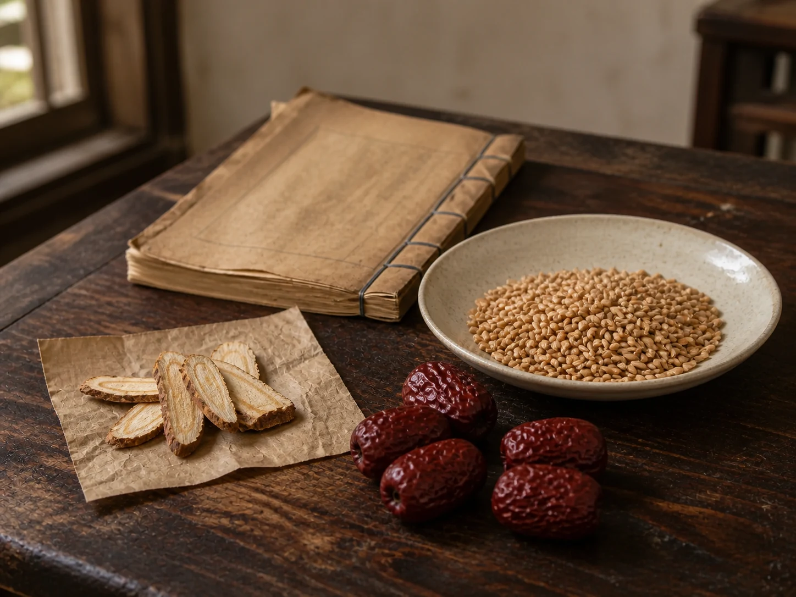

Licorice, Wheat, and Jujube on an Old Formula Page
In the Jin Gui Yao Lue, licorice root, wheat, and jujubes share one brief formula whose old wording remains separate from present-day care.

Three materials beside the book
Licorice root lies in pale, fibrous slices; wheat gathers as a field-colored mound; dried jujubes hold their dark red wrinkles. On a wooden table they seem close to pantry materials, although licorice also belongs to an herbal dispensary. Their visual simplicity helps explain why an old formula can appear deceptively familiar.
The name Gan Mai Da Zao Tang gathers those three materials into one phrase. This archive keeps them separate in the picture because a historic ingredient list is not an invitation to combine whatever looks similar at home. Common names can also hide differences in species, processing, strength, and individual risk.
A brief line in the text
The Jin Gui Yao Lue records the formula in its chapter on miscellaneous illnesses of women. The passage names licorice, wheat, and jujubes and places them beside an old description of distress, crying, and frequent yawning. Those words belong to the framework of the source and should not be converted into a modern diagnosis.
Scallion White and Soybeans on an Old Formula Page also follows a compact ingredient list while withholding amounts and preparation. Sour Jujube Seeds at the Bedside, by contrast, preserves a family scene built around a single herb-shop parcel. Similar ingredients can travel through texts and homes without proving the same purpose or an unbroken practice.
Why the old page stays closed
Historical survival does not establish present-day effectiveness or safety. Licorice contains glycyrrhizin, which can cause serious adverse effects, especially with large or prolonged intake, and risks can be greater for people with high blood pressure or heart or kidney conditions. Herbal products may also interact with medicines, so the three-item list is not as simple as its length suggests.
This page gives neither the old quantities nor a modern substitute. Questions about persistent emotional distress, sleep changes, or other symptoms belong with an appropriate health professional, not with a reconstructed formula from an archive. The roots return to their paper, the wheat stays in its dish, and the jujubes remain beside the closed thread-bound volume.